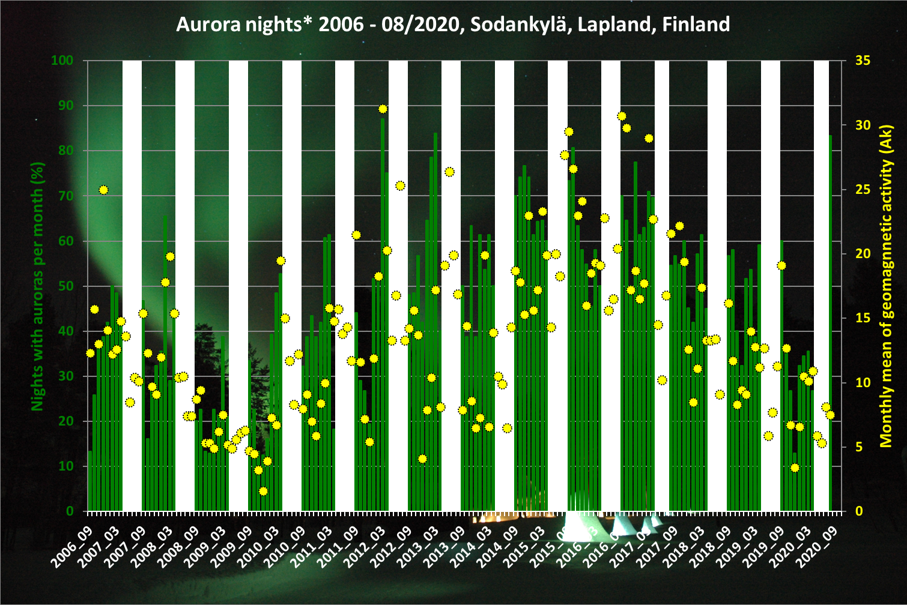
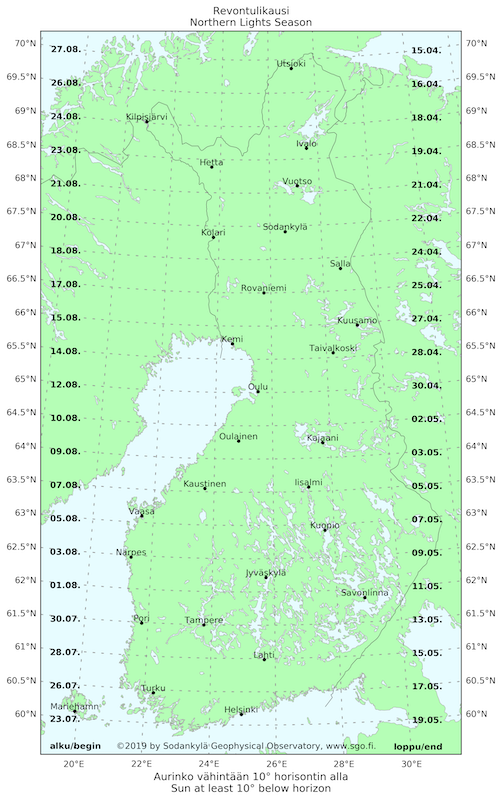
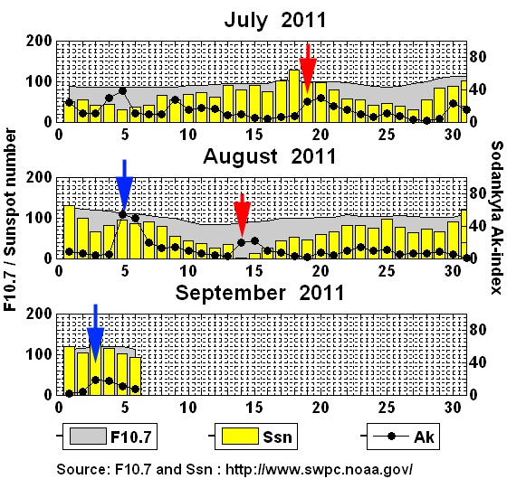
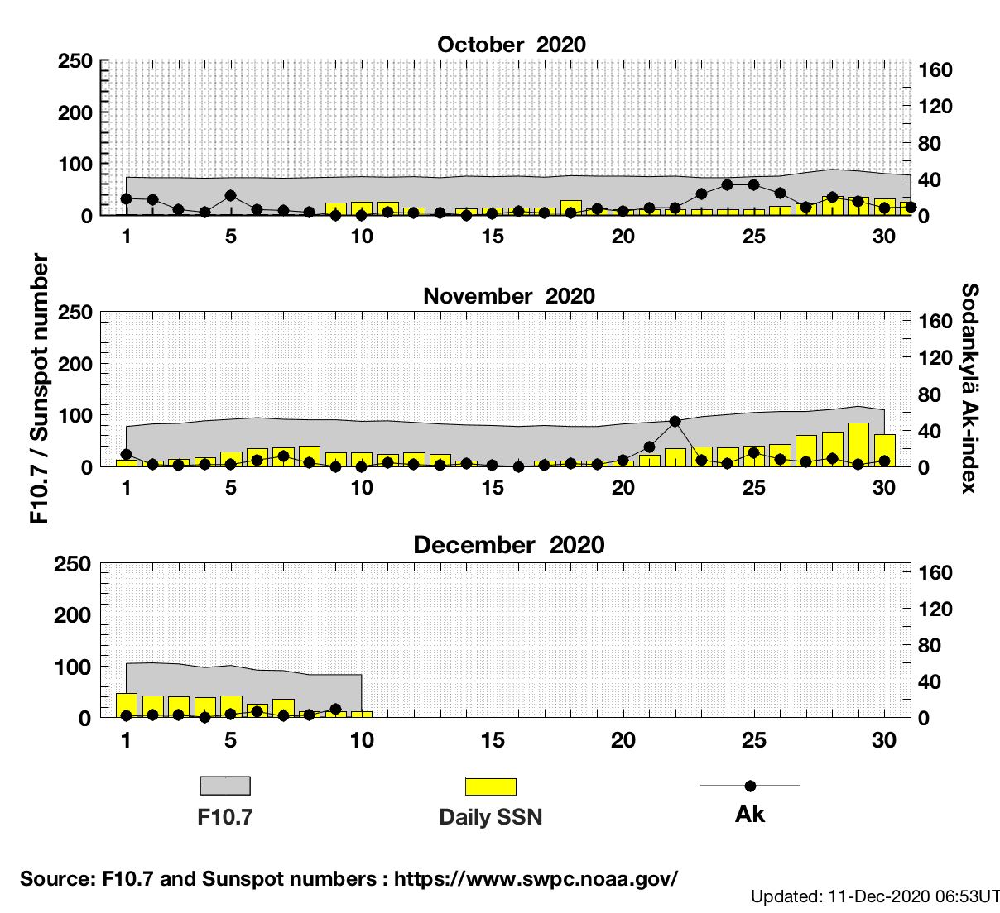

Before sending any question about the Northern Lights to us, please read this page. Probably you will find the answers to your questions.
You can check it in our Aurora Movie gallery. At the moment (Sep 2020) solar activity is still in the minimum of the cycle. Some sun spots of Cycle 25 has been observed during summer 2020. The geomagnetic activity in past months has still been low and activity is mostly origin from the long living coronal holes of the Sun, so the occurence of the Northern Lights has strongly followed the 27 days solar rotation (see explanation below) and coming activity can be easily checked from Spaceweather.com. The activity of late August might stil be geoeffective from 25/26 September 2020 onwards.
During the minimum phase of the solar activity the probability to see Northern Lights in Lapland is still rather good allthough the auroras stay mostly in the northern sky. Often the auroras occur as quiet arcs with short intense period around magnetic midnight. The geomagnetic activity during the season approaches previous minima (2009-2010), but the low aurora night rate of the winter is partly caused by bad weather. Ongoing winter with many low pressures has brought record warm air and record amount of snow to the Central Lapland.
The statistics shows geomagnetic acvity (yellow circles) observed at SGO. The green bars show amoung of the nights the auroras could be detected from SGO iCCD camera. White bars shows time of the bright nights (late Apr - mid Aug) when the Northern Lights are not visible. Note, the all-sky cameras detects the Northern Lights also trough the clouds, so even the camera site is cloudy, we get information about the occurence. Cloudiness can varie lot, so the location and the weather has also important role in the hunting of the auroras.
The observatory does not have facilities to serve tourists. We are an independent department of the University of Oulu and our main task is geophysical observations and related research including the Northern Lights. We do not have public opening hours at the observatory and we do not work during evenings and nights when the Northern Lights are in the sky. Note: Sodankylä is 350km north of Oulu and 130km north of Rovaniemi.
No. We do not have safari services. If you are planning a trip to see the Northern Lights, there are available guided Northern Light tours from different ski resorts (Pyhä-Luosto, Saariselkä, Levi, Ylläs) in Lapland. Check their webpages for guided safaris. Also there are many destinations like Kakslauttanen, Levi and Rovaniemi with accommodation possibility in glass igloos, which have planned for the comfortable watching of the Northern Lights and night sky of Lapland. Also there are more specific destination for photographers. SGO is not able to take care visitors.
In Sodankylä, the season of the Northern Lights starts in the end of August when nights become darker. However, at the start of the season, nights are short and just the darkest moments are suitable for observing the Northern Lights. But the days become shorter and shorter towards December when the polar night of the northern hemisphere covers the northern part of Finland and Scandinavia. At the end of October, when time is shifted from daylight saving (summer) time to normal (winter) time, Magnetic Local Midnight is earlier and also darkness comes earlier. The auroral season continues until late April when the nights are too bright to see Northern Lights.
The Northern Lights season begins, when the lowest elevation of the Sun at night time reaches 10° or more below the horizon. However, very bright auroral displays can be seen a little earlier already.
The length of the Northern Lights season does depend on geographic latitude. In southern Finland, it is considerably longer than in Northern Finland, as you can see in the map below. The map shows for different latitudes the beginning of the season on the left and the end on the right. But remember, if the space weather conditions for Northern Lights are not right, or if it's cloudy, you won't see anything even if it's dark enough! You can download a high-resolution map in PNG (2MB) format or as PDF (825kB), which you can print out to make your own Northern Lights Season poster.
Yes, you can, but the probability of seeing Northern Lights increases when you travel further north. The auroral oval, usually about 2000km from the north magnetic pole, expands during magnetic storms. During a regular night the auroral oval covers northernmost Scandinavia and Northern Lights are visible in Lapland. Finnish Astrnomical Assosiation URSA has observation website where the current aurora observation can be seen from Finland. This is specially good service in Central and Southern Finland, where are most of the observers, but works also for the Northern Lapland. Usually auroras observed in Central Finland are actually above Lapland.
See: Taivaanvahti. Service is available in Finnish.
The source of the Northern Lights are particles originally from the Sun. The particle flow called as Solar wind varies all the time. Monitoring of the activity of the Sun and Solar Wind gives information about approaching disturbances in Earth's magnetosphere. You can get forecasts for the coming days from, e.g., SpaceWeather.com.
The lifetime of the active regions on the Sun varies. Sometimes the active regions stay alive for a few months. Because the Sun rotates around its rotation axis in about 27 days (note: the Earth does it once per day) the active region faces Earth about every four weeks. Check the activity 27 days backwards if there were Northern Lights on the sky. The same source can cause them again. This can be seen also in the geomagnetic activity, which is monitored by the observatory. The plot below shows three month activity cycle. If the Ak has increased suddenly, usually it increases again about 27 days later (see: current activity) with auroras. Oulun yliopisto
Below is the present activity level and count 27 days (or even 54 days) forward and book your trip. Note, it still can be cloudy, but the propability to get the Northern Lights is higher.
1.Wear warm clothes so you can stay outside waiting for the northern lights! Keep spare batteries warm in a pocket. 2.Use a tripod if possible. It is important not to move the camera during the exposure. 3.Use the manual mode of your camera. 4.Set the sensitivity value to ISO 400 or higher if possible (Note: digital compact cameras usually give noisy pictures at high ISO settings so a system camera is better). If you still use film, an ISO 400 slide film is a good choice. 5.Use a wide-angle lens set at the smallest f-value available. f/2.8 is already good. Smaller value means bigger aperture (more light) used for exposure. 6.Focus at infinity. 7.Start with a reasonably long exposure time (20 seconds).
The blog post How to Photograph the Northern Lights?, which was written by an SGO staff member, provides a short explanation and a chart, where you can look up working combinations of camera settings for Northern Lights (and stars) photography (Aperture, Exposure time, ISO).